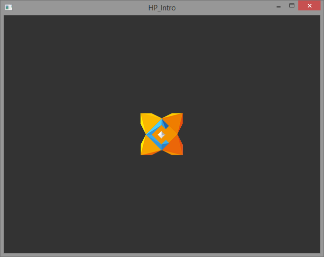
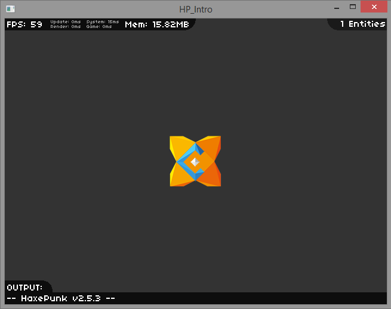

HaxePunk is one of the most popular game frameworks for Haxe and OpenFL.
It's a spiritual successor to a popular AS3 framework FlashPunk. I'm not using the word "port" because it really does not feel like a port, but a library that aims to provide the same functionality, but is written from scratch, taking advantage of everything Haxe and OpenFL offers.
That's a good thing, because what we end up with is a layer of optimized, non-bloated code of just the essential things that's necessary for game development.
Today I'll show you how to install HaxePunk, how to make a simple HaxePunk project, and how to debug your game.
If you haven't installed Haxe and OpenFL yet, do so by following this tutorial.
Similarly to most popular Haxe libraries, HaxePunk can be installed using haxelib. Simply run the following commands:
haxelib install HaxePunk
haxelib run HaxePunk setupHaxePunk is installed, we can start using it right away.
There are two ways to create a HaxePunk project.
The first one is by using the command line:
haxelib run HaxePunk new HaxePunk_ProjectThis will create a new folder HaxePunk_Project in the current directory with all the initial files and sub-directories.
A more convenient way is to use a FlashDevelop template, which can be found on the official github page. To install the template, simply drag the file to your open FlashDevelop window.
You can then create a new HaxePunk project using the Project/New Project menu.
The generated HaxePunk project's structure looks like a simplified OpenFL project - we have the project.xml file for configuration, initial Main.hx class, the assets folder and so on. There is also an additional haxe file called MainScene.hx.
If you look at the Main.hx class code, you'll see that the MainScene class is instantiated during initialization and applied to the scene property of the HXP class:
import com.haxepunk.Engine;
import com.haxepunk.HXP;
class Main extends Engine
{
override public function init()
{
#if debug
HXP.console.enable();
#end
HXP.scene = new MainScene();
}
public static function main() { new Main(); }
}This is done to mark the created scene as currently active and visible. Right now our MainScene class is almost empty:
import com.haxepunk.Scene;
class MainScene extends Scene
{
public override function begin()
{
}
}The begin() function, which is called when the object is initialized, currently does nothing. As an example, let's add a picture to the screen. I'll also make it moveable using the keyboard to demonstrate how easy it is to handle keyboard inputs in HaxePunk.
First of all we need to add the picture to the assets directory to make it usable in the engine. Here's the image that I'm using for this example:
Once you've put that in the assets directory with the name "logo.png", you can access it in HaxePunk by creating an Image instance and passing the path to the image to the constructor.
All entities in HaxePunk (which is what our moving picture is going to be) have to extend the Entity class.
Create a new Logo.hx class:
package ;
import com.haxepunk.Entity;
import com.haxepunk.graphics.Image;
import com.haxepunk.utils.Input;
import com.haxepunk.utils.Key;
/**
* Logo entity.
* @author Kirill Poletaev
*/
class Logo extends Entity
{
private var speed:Int;
public function new()
{
super(270, 190);
speed = 5;
graphic = new Image("graphics/logo.png");
}
public override function update():Void {
if (Input.check(Key.RIGHT)) {
moveBy(speed, 0);
}
if (Input.check(Key.LEFT)) {
moveBy(-speed, 0);
}
if (Input.check(Key.DOWN)) {
moveBy(0, speed);
}
if (Input.check(Key.UP)) {
moveBy(0, -speed);
}
}
}As seen above, I use the super() method in the constructor to set the initial coordinates for this entity. I then set a value for the "speed" variable that I created, and apply a new Image instance to the "graphic" property of the Entity. This way the image is tied to this Entity.
Entity subclasses can override an update() method, which is called every frame by the parent Scene object.
I check for keyboard inputs using the Input class and its check() method. The entity is moved around using the moveBy() method.
Back to the MainScene class, I add the logo to the scene using the add() method:
import com.haxepunk.Scene;
class MainScene extends Scene
{
public override function begin()
{
add(new Logo());
}
}You can now run the game and be able to move your image around.
Just like in regular Haxe programs, you can use any compiler target, in this case I'm using neko:
Compiling with these settings will result in a "game" that looks like this:
HaxePunk employs a useful debugging console. To enable it, simply compile your game in the "debug" mode:
It will make the compiled game look like this:
Notice all the benchmarking statistics that are displayed in the bar at the top.
Next time we'll take a look at other features of this engine by creating a shooting game.